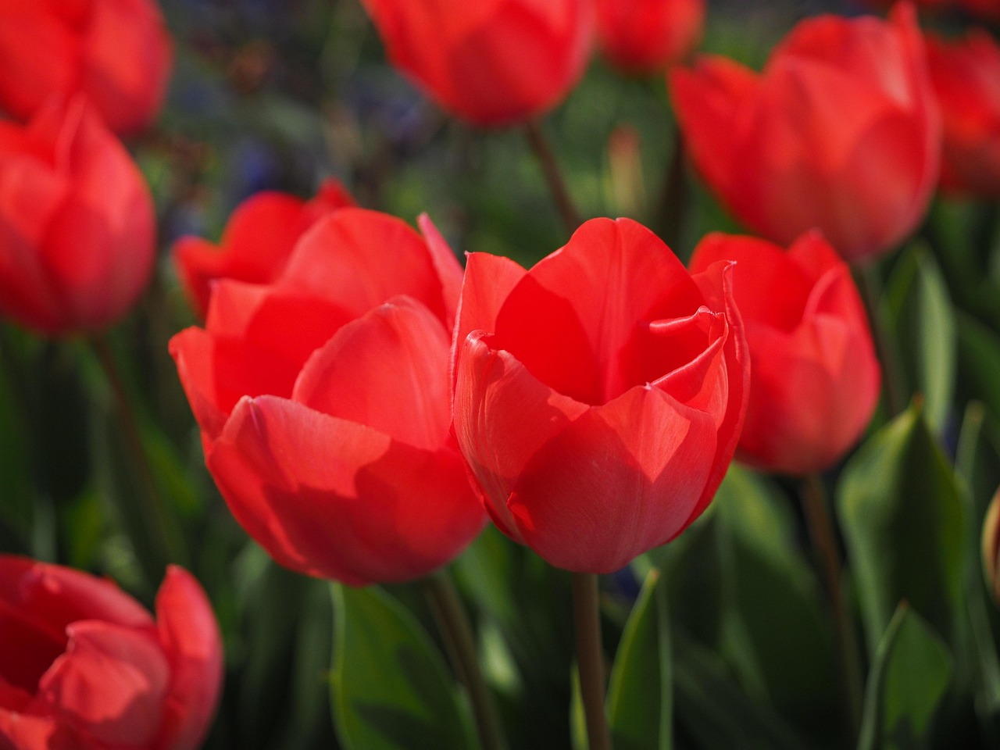
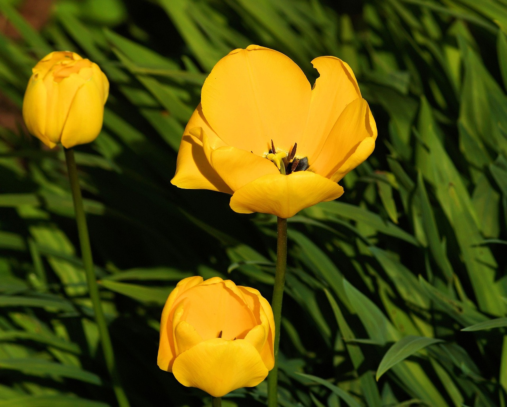

🌷 郁金香
Tulipa gesneriana - 优雅与高贵的象征



📋 基本信息
学名：
Tulipa gesneriana
科属：
百合科郁金香属
原产地：
土耳其、中亚地区
花期：
3-5月（春季开花）
花语：
优雅、高贵、祝福、永恒的爱
株高：
20-50厘米
🎨 主要品种
红郁金香
爱的宣言
代表：阿波罗黄郁金香
财富与希望
代表：金色旋律紫郁金香
永恒的爱
代表：紫旗粉郁金香
热爱与幸福
代表：粉色印象🌱 养护要点
☀️ 光照：
喜阳光充足，每天至少4-6小时
💧 浇水：
保持土壤微湿，避免积水
🌿 土壤：
疏松肥沃的沙质土壤
🌡️ 温度：
适宜15-20°C，球根需冷藏春化
🍃 施肥：
种植时施基肥，花后追肥
✂️ 修剪：
花后剪去花梗，保留叶片
💡 专业养护技巧
• 球根种植深度为球高的2-3倍
• 开花后减少浇水，促进球根发育
• 夏季高温时球根需挖出冷藏
• 每年需要重新种植，不宜连作
🍂 季节养护指南
❄️ 冬季（11-2月）
• 种植球根
• 覆土保温
• 保持干燥
• 等待发芽
🌸 春季（3-5月）
• 发芽期浇水
• 施磷钾肥
• 花期管理
• 花后修剪
☀️ 夏季（6-8月）
• 挖出球根
• 清洗消毒
• 冷藏保存
• 干燥储存
🍁 秋季（9-10月）
• 选购球根
• 冷藏处理
• 准备种植
• 土壤改良
🐛 常见病虫害防治
灰霉病：
叶片有灰霉，及时通风，喷洒多菌灵
球根腐烂：
球根变软发臭，消毒土壤，控制浇水
蚜虫：
危害嫩芽，喷洒吡虫啉防治
根螨：
危害球根，种植前用杀螨剂处理
🌿 繁殖方法
球根繁殖：
主要繁殖方式，秋季种植球根
分球繁殖：
将母球周围的小球分开种植
播种繁殖：
用于育种，需要4-7年开花
📚 文化意义
郁金香在荷兰被誉为国花，象征着富贵、高雅和永恒的爱。不同颜色的郁金香有着不同的寓意：
红郁金香：
热烈的爱情，爱的宣言
黄郁金香：
财富、希望和友谊
紫郁金香：
永恒的爱，高贵典雅
白郁金香：
纯洁的爱，失恋